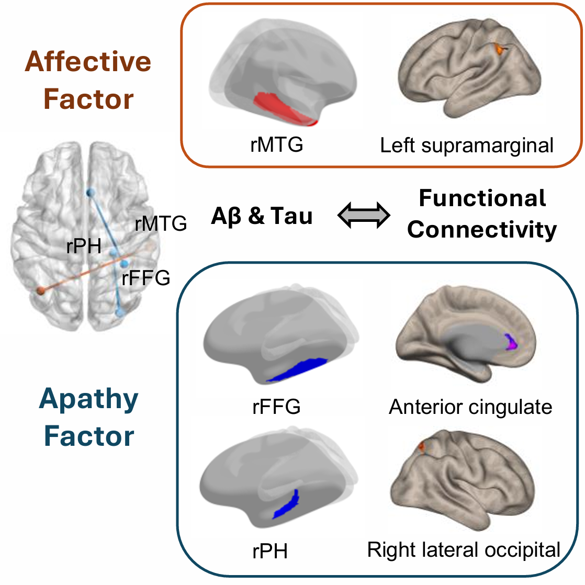

Neurodegenerative diseases exhibit substantial variability in cognitive decline and behavioral symptoms, providing a window into the neural mechanisms underlying cognition and emotion. Neuroimaging provides valuable insights into understanding cognitive processes and plays an important role in informing the development of clinically relevant interventions.
This project demonstrated that perfusion patterns derived from early-phase positron emission tomography (PET) can predict conversion to dementia in patients with Parkinson's disease. In particular,hypoperfusion in Alzheimer's disease-related regions was associated with a risk of dementia conversion.
Publication: Chun, M. Y.*, Lee, T.*, Kim, S. H., Lee, H. S., Kim, Y. J., Lee, P. H., Sohn, Y. H., Jeong, Y., & Chung, S. J. (2024). Hypoperfusion in Alzheimer's Disease-Prone Regions and Dementia Conversion in Parkinson's Disease. Clinical Nuclear Medicine, 49(6), 521–528. https://doi.org/10.1097/RLU.0000000000005211
What neural correlates are associated with heterogeneity in behavioral symptoms among patients with Alzheimer's disease?
This project identified brain regions showing pathology-related alterations in functional connectivity, which were associated with affective (e.g., depression, anxiety) and apathy symptoms (e.g., apathy, appetite and eating abnormalities).
At the preliminary stage, analyses focused on tau pathology and affective symptoms only.
Poster presentation at the International Conference of the Korean Dementia Association (Awarded):
In final research publication, analyses were expanded to incorporate both amyloid-beta and tau pathology, as well as a broader range of NPS.

Publication: Lee, T., Jeong, Y., & Alzheimer's Disease Neuroimaging Initiative (2025). Neural Representations of Neuropsychiatric Symptoms in Alzheimer's Disease Continuum Using Pathology-Based Functional Connectivity Analysis. Brain and Behavior, 15(9), e70774. https://doi.org/10.1002/brb3.70774
Note: If you have any questions about this study, feel free to contact me!